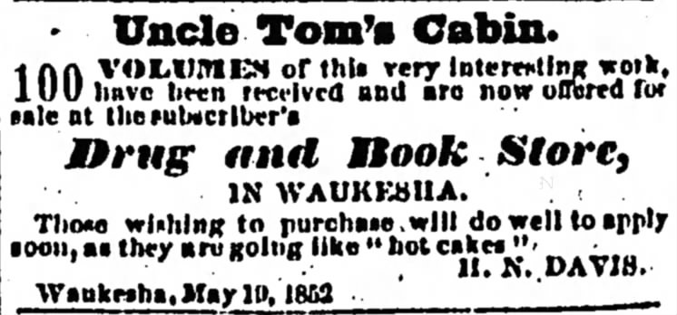

Printing Morality: Uncle Tom's Cabin and the Antebellum Political Realignment
This paper shows how a widely circulated cultural work, Uncle Tom's Cabin, shaped presidential voting patterns and contributed to the political realignment of the 1850s. Using advertisement records extracted from digitized historical newspapers, I construct county-level exposure to the novel based on travel times along the 1850 transportation network. Difference-in-differences estimates show that counties with greater exposure experienced larger declines in Democratic vote shares and stronger movement toward the emerging Republican Party during the 1850s. Evidence from naming patterns, Union Army enlistment, newspaper discourse, and Republican campaign rhetoric suggests that the novel reshaped moral attitudes toward slavery, amplified antislavery discussion, and helped translate moral response into partisan mobilization.
Presented: GW Applied Micro Brownbag, Warwick SAGE Summer School 2023, ACES Summer School 2023, the EHA 2023 Annual Meeting (Poster), the 2025 World Economic History Congress, the ASREC 2026 Annual Meeting, the XMU Conference on Empirical Political Economy 2026, the XMU Workshop on History, Institutions, and Development 2026, and the AEA/ASSA 2027 Annual Meeting (Poster; accepted).